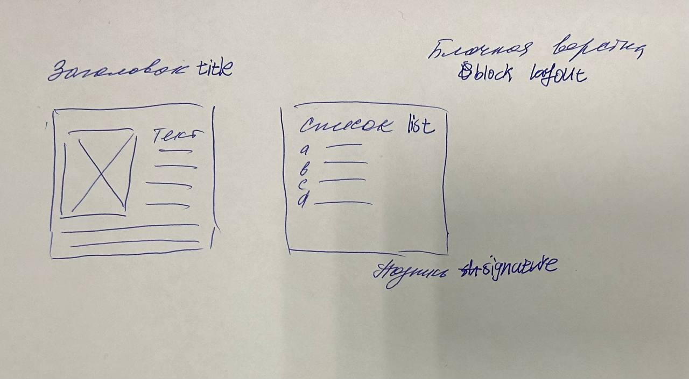

Сразу, как только мы заселились, я не успел разложить вещи, как в мою голову ворвался такой поток информации, что ни в сказке сказать, ни топором не вырубить. Во-первых, на судне абсолютно все бумаги - мануалы, журналы, и так далее - все на английском языке. Даже блокнотик, в который записываются отчеты по грузовым операциям - и тот на английском. Бумаги... ооооо... Их тысячи, лежат в сотнях папок, плюс огромное количество документов на компьютерах. Это мне просто разорвало мозг в клочья, потому что с этим объемом информации надо ознакомиться и научиться работать в кротчайшие сроки. Постоянная беготня, постоянная суета, совсем не легко. А также надо как можно быстрее разобраться со всем оборудованием на мостике, а там его мама не горюй. В общем, пока что, свободного времени нет вообще. Абсолютно. Только ночью с 00:00 до 06:00 можно поспать. Но это продлится не долго, буквально 1-2 недели, потом океанский переход до Европы, можно будет уже спокойно стоять вахты, а в свободное время читать книги компании Seatrade, на случай если в Европе придет проверка и будет задавать вопросы.